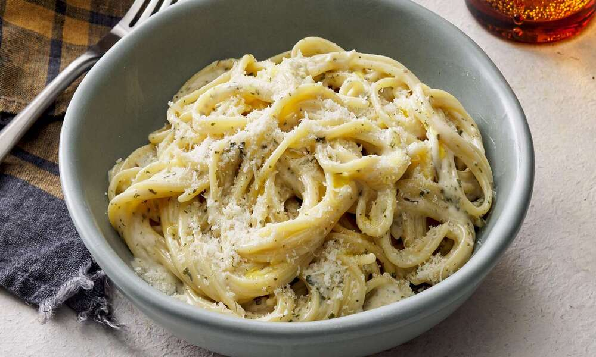

← Back to Recipes
Creamy Garlic Pasta
Time: 20 minutes | Serves: 2 | Difficulty: Easy

Ingredients
- 8 oz pasta (fettuccine or spaghetti)
- 4 garlic cloves, minced
- 1 cup heavy cream or half & half
- 1/2 cup grated parmesan cheese
- 2 tbsp butter
- Salt, pepper, and fresh parsley
Steps
- Cook pasta according to package instructions.
- In a skillet, melt butter and sauté garlic until fragrant.
- Add cream and simmer for 3 minutes.
- Stir in parmesan cheese until melted.
- Toss cooked pasta in the sauce and garnish with parsley.